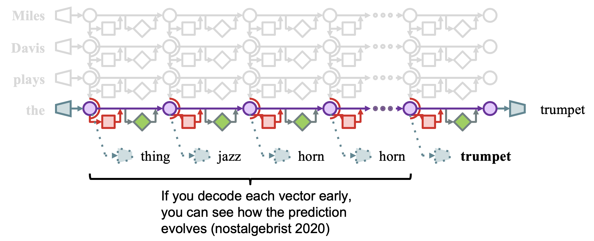

How can we peer inside a running language model to see what it's "thinking"? The key insight is that transformer intermediate layers encode evolving predictions that we can decode and inspect. This week introduces the conceptual vocabulary and core techniques for mechanistic interpretability, including the logit lens—a simple but powerful idea that opened a window into the progressive refinement of representations through the network.
By the end of this week, you should be able to:
A transformer language model processes text through three phases, creating a grid of internal states:

A transformer can be understood as a series of operations that read from and write to a shared "residual stream." At each layer, attention heads and MLP modules add information to this stream rather than replacing it entirely.
This view enables a key insight: we can peek at intermediate states xL to see what the model "knows" at layer L.
What if we don't wait until the final layer to decode? The logit lens applies the decoder (unembedding matrix) directly to intermediate activations:
If you decode each vector early, you can see how the prediction evolves. In this example, the model's prediction for "Miles Davis plays the ___" progresses through: "thing" → "jazz" → "horn" → "horn" → "trumpet". The correct answer emerges gradually as information is refined through the layers.
Key observations from logit lens analysis:
When applying logit lens to multilingual models processing non-English text, a striking pattern emerges: regardless of input language, intermediate representations often decode to English tokens.
Wendler et al. (2024) studied this systematically with translation tasks. When prompting a model to translate French to Chinese (e.g., Français: "fleur" - 中文:), the intermediate layers decode to... English! The model appears to pivot through English internally, even when English is neither the input nor output language.
Possible implications:
But what does this actually show? The observation that intermediate layers decode to English is striking, but its interpretation is far from settled. Consider: the unembedding matrix was trained predominantly on English data—perhaps it simply projects any high-dimensional vector more readily onto English tokens. Or perhaps the pattern reflects tokenization artifacts rather than genuine linguistic processing. And even if the model does "pivot through English," we have no causal evidence that these intermediate English representations are actually used in the computation, rather than being epiphenomenal byproducts. We'll return to further experiments along these lines later in the course, but it's a reasonable debate: what does this really prove?
The basic logit lens assumes we can directly project intermediate activations through the unembedding matrix. But representations at early layers may not be in the same "format" as final-layer representations, and researchers have developed many variations:
Each variation asks a slightly different question about what information is present in intermediate representations. The proliferation of "lenses" reflects both the fertility of the basic idea and the difficulty of interpreting what these projections really mean.
Logit lens generates striking observations. But observations are not explanations. The central challenge is: what additional experiments would you need to turn a logit lens observation into a scientific claim?
Consider the Wendler observation: intermediate layers decode to English during French→Chinese translation.
Your task: For each alternative, design an experiment that would distinguish it from the main hypothesis. What would you measure? What controls would you need? What result would be convincing?
Similar questions arise for any logit lens observation:
We'll develop tools to address these questions throughout the course: causal interventions (Week 5), systematic evaluation methodology (Week 3), and validation techniques (Weeks 6-7). For now, the goal is to recognize the gap between observation and understanding—and to start thinking about how to bridge it.
In this hands-on exercise, we'll use the NDIF Logit Lens Workbench—a code-free tool for exploring transformer internals. No programming required!
Open NDIF Logit Lens WorkbenchFirst, we'll replicate the "latent language" finding from Wendler et al. (2024). Does the model really pivot through English when translating between non-English languages?
Now let's apply logit lens to investigate a research question we'll revisit throughout the course: how do language models process puns?
Puns are interesting because they require recognizing that a word has multiple meanings simultaneously. If a model "gets" a pun, we might expect to see both meanings active in its intermediate representations.
Here's a more sophisticated experiment: can we use in-context learning to teach the model the "pun pattern"?
Try comparing the prediction for an incomplete pun alone versus prefixed with other puns:
Use logit lens to examine: at which layers does "interest" emerge? Does the pun context change what appears in intermediate layers, or only at the final layers? This connects back to the function vectors idea from Week 0—is there a "pun function" that gets activated by the context?
Try the same pun experiments on models of different sizes. At what scale does pun understanding emerge? A small model might never predict "interest" even with pun context, while a larger model might get it immediately. Use this to explore: how large does a model need to be to "get" puns? Does the pattern in intermediate layers look different in models that succeed versus those that fail?
State-of-the-art models like ChatGPT or Claude can help in two ways:
We'll return to the pun research question throughout the semester as we learn new interpretability methods. Each technique will give us a different lens on the same phenomenon.
For those who want to dive deeper into the implementation, this exercise provides hands-on coding experience:
Due: Thursday of Week 1
Each team will present their five-minute elevator pitch. As a class, we will read each other's proposals and discuss them using the FINER framework:
After receiving feedback, begin exploratory analysis to test the "F" in FINER: Is this feasible? Are there signs of life?
Deliverable for Week 2: Start a running project slide deck in your team's Google Drive. Include your preliminary observations and be ready to present them in class.